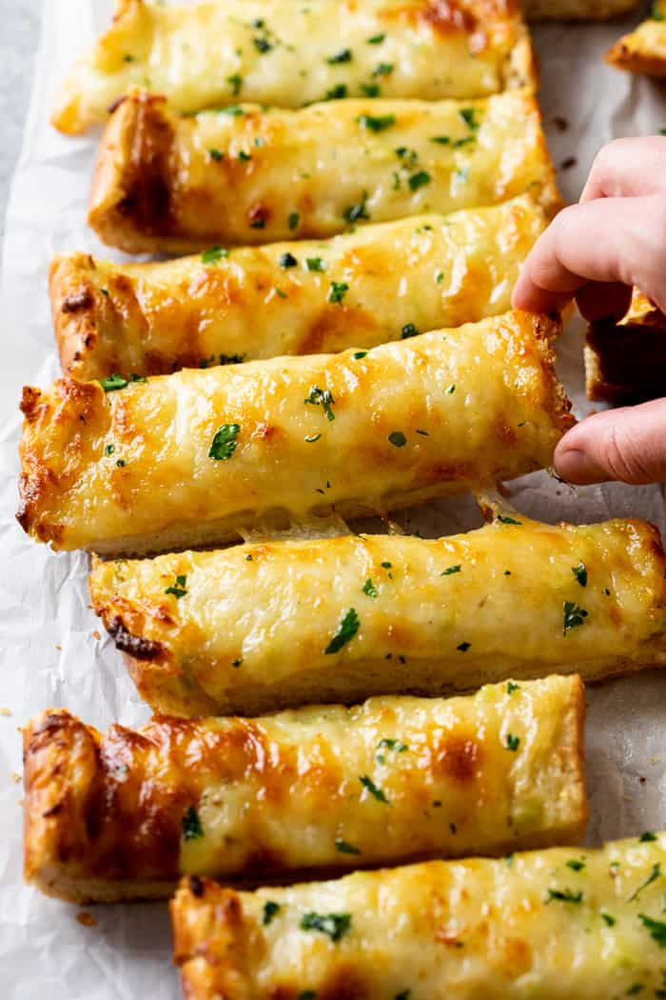

Garlic Bread With Cheese

Garlic Bread With Cheese Recipe
This Garlic Bread with Cheese is made with French Bread, a delicious garlic butter mixture, and is topped with Parmesan and Mozzarella Cheese. Plus a secret ingredient that takes this recipe up to restaurant quality!
Ingredients
- French Bread (1 loaf, about 1lb)
- Salted butter(1 stick, room temp.)
- Fresh garlic(6 cloves, minced)
- italian salad dressing(1/4 cup)
- Parmesan cheese(1/4 cup, grated)
- shredded mozzarella cheease(3 cups, divided)
- Fresh parsley(to garnish)
Steps
- Slice the bread in half to create two thinner pieces of equal size.
- Combine room temperature butter, minced garlic, 1 cup Mozzarella cheese, and Italian Salad Dressing. Spread it evenly over each slice of bread. Top with Parmesan, then with remaining 2 cups of Mozzarella.
- Bake at 350° for 10 minutes, then increase heat to 450° and baked until the top begins to brown, up to 8 more minutes.
- Cut into 1-inch slices, garnish with parsley, and serve with pasta, soup, or homemade marinara sauce.